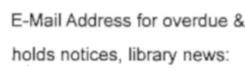

PI-hole PrIvacy:
TamperIng Is a Good ThIng
JunIor TIdalCIty UnIversIty of New York Chad ClarkHIghland Park PublIc LIbrary Bryan NeIl JonesNashvIlle PublIc LIbraryPrIvacy
What are our hopes?
What are our challenges?
malware / phishing / doxing


dark patterns



future vIsIons / escape routes
FacIal recognItIon bans
User space FLOSS
Non-commercIal decentralIzed Internet